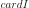
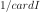

OptimalLHSExperiment¶
-
class
otlhs.OptimalLHSExperiment(*args)¶ OptimalLHS base class.
Notes
Perform the generation of optimal LHS designs.
Methods
generate()Generate points according to the type of the experiment. generateWithWeights()Generate points and their associated weight according to the type of the experiment. getClassName()Accessor to the object’s name. getDistribution()Accessor to the distribution. getId()Accessor to the object’s id. getLHS()Return the LHS design. getName()Accessor to the object’s name. getResult()Result accessor. getShadowedId()Accessor to the object’s shadowed id. getSize()Accessor to the size of the generated sample. getSpaceFilling()Return the space-filling criterion to be optimized. getVisibility()Accessor to the object’s visibility state. getWeight()Accessor to the weights associated with the points. hasName()Test if the object is named. hasVisibleName()Test if the object has a distinguishable name. setDistribution(\*args)Accessor to the distribution. setName(\*args)Accessor to the object’s name. setShadowedId(\*args)Accessor to the object’s shadowed id. setSize(\*args)Accessor to the size of the generated sample. setVisibility(\*args)Accessor to the object’s visibility state. -
__init__(*args)¶
-
generate()¶ Generate points according to the type of the experiment.
Returns: sample :
NumericalSamplePoints which constitute the design of experiments with . The sampling method is defined by the nature of the weighted experiment.
Examples
>>> import openturns as ot >>> ot.RandomGenerator.SetSeed(0) >>> myExperiment = ot.MonteCarloExperiment(ot.Normal(2), 5) >>> sample = myExperiment.generate() >>> print(sample) [ X0 X1 ] 0 : [ 0.608202 -1.26617 ] 1 : [ -0.438266 1.20548 ] 2 : [ -2.18139 0.350042 ] 3 : [ -0.355007 1.43725 ] 4 : [ 0.810668 0.793156 ]
-
generateWithWeights()¶ Generate points and their associated weight according to the type of the experiment.
Returns: sample :
NumericalSampleThe points which constitute the design of experiments. The sampling method is defined by the nature of the experiment.
weights :
NumericalPointof size Weights associated with the points. By default, all the weights are equal to .
Examples
>>> import openturns as ot >>> ot.RandomGenerator.SetSeed(0) >>> myExperiment = ot.MonteCarloExperiment(ot.Normal(2), 5) >>> sample, weights = myExperiment.generateWithWeights() >>> print(sample) [ X0 X1 ] 0 : [ 0.608202 -1.26617 ] 1 : [ -0.438266 1.20548 ] 2 : [ -2.18139 0.350042 ] 3 : [ -0.355007 1.43725 ] 4 : [ 0.810668 0.793156 ] >>> print(weights) [0.2,0.2,0.2,0.2,0.2]
-
getClassName()¶ Accessor to the object’s name.
Returns: class_name : str
The object class name (object.__class__.__name__).
-
getDistribution()¶ Accessor to the distribution.
Returns: distribution :
DistributionDistribution used to generate the set of input data.
-
getId()¶ Accessor to the object’s id.
Returns: id : int
Internal unique identifier.
-
getLHS()¶ Return the LHS design.
Returns: value :
LHSExperimentResult the factory that builds initial design to be optimized
-
getName()¶ Accessor to the object’s name.
Returns: name : str
The name of the object.
-
getResult()¶ Result accessor.
Returns: value :
LHSResultResult of generation that contains the optimal design, some criteria and history
-
getShadowedId()¶ Accessor to the object’s shadowed id.
Returns: id : int
Internal unique identifier.
-
getSize()¶ Accessor to the size of the generated sample.
Returns: size : positive int
Number of points constituting the design of experiments.
-
getSpaceFilling()¶ Return the space-filling criterion to be optimized.
Returns: value :
SpaceFillingCriterion function to be optimized
-
getVisibility()¶ Accessor to the object’s visibility state.
Returns: visible : bool
Visibility flag.
-
getWeight()¶ Accessor to the weights associated with the points.
Returns: weights :
NumericalPointof sizeWeights associated with the points. By default, all the weights are equal to .
-
hasName()¶ Test if the object is named.
Returns: hasName : bool
True if the name is not empty.
-
hasVisibleName()¶ Test if the object has a distinguishable name.
Returns: hasVisibleName : bool
True if the name is not empty and not the default one.
-
setDistribution(*args)¶ Accessor to the distribution.
Parameters: distribution :
DistributionDistribution used to generate the set of input data.
-
setName(*args)¶ Accessor to the object’s name.
Parameters: name : str
The name of the object.
-
setShadowedId(*args)¶ Accessor to the object’s shadowed id.
Parameters: id : int
Internal unique identifier.
-
setSize(*args)¶ Accessor to the size of the generated sample.
Parameters: size : positive int
Number of points constituting the design of experiments.
-
setVisibility(*args)¶ Accessor to the object’s visibility state.
Parameters: visible : bool
Visibility flag.
-